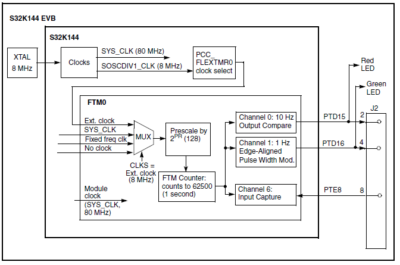

Description
This example uses the Flex Timer Module (FTM) to perform common digital I/O functions of:
- Edge-Aligned Pulse Width Modulation (EPWM): 1 Hz, low 25%, high 75%
- Output Compare (OC): Toggle output every 100 msec (10 MHz toggle produces 5 MHz frequency)
- Input Capture (IC): Capture input’s rising or falling edge times
All channels in the FTM share a common 16-bit counter for the I/O functions.

- To measure the Input Capture time, connect a wire from J2 pin 8 to pin 4 or pin 2.
Design
- Disable watchdog
- System clocks: Initialize SOSC for 8 MHz, sysclk for 80 MHz, RUN mode for 80 MHz
- Initialize FTM0. Input clock source will be 8 MHz SOSCDIV1_CLK:
- Disable write protection to FTM0 registers to allow configuration
- Controls:
- Prescale clock source by 128 (8 MHz / 128 = 62500 Hz)
- Enable channels 0, 1 as outputs
- No filtering or interrupts are used
- PWM is configured as up count (CPWMS=0)
- Clock source = none (clock/counter will be started after initializations)
- Initialize mode, polarity settings: CPWMS, DECAPEN, MCOMBINE, COMBINE, polarity=0
- Counter count up value = 62500 (1 second period)
- Initialize FTM0 Channel 0 as Output Compare, toggle on match every 100 msec:
- Configure MSB:MSA, ELSB:ELSA for Output Compare mode
- Set initial compare value to 6250 (for 100 msec)
- Set polarity to active high
- Initialize FTM0 Channel 1 as EPWM, 1 Hz, 75% duty Cycle:
- Configure MSB:MSA, ELSB:ELSA for PWM mode
- Set initial compare value for 75% duty cycle
- Initialize FTM0 Channel 6 as Input Capture, either edge:
- Configure MSB:MSA, ELSB:ELSA for Input Capture mode
- Initialize port pins for FTM0:
- PTD15: FTM0 CH 0 - output compare - connects to red LED
- PTD16: FRM0 CH 1- PWM - connects to green LED
- PTE8: FTM0 CH 6 - input capture
- Start FTM0 counter
- Loop:
#include "device_registers.h"
{
PCC->PCCn[PCC_PORTD_INDEX ]|=PCC_PCCn_CGC_MASK;
PCC->PCCn[PCC_PORTE_INDEX ]|=PCC_PCCn_CGC_MASK;
PORTE->PCR[8]|=PORT_PCR_MUX(2);
PORTD->PCR[15]|=PORT_PCR_MUX(2);
PORTD->PCR[16]|=PORT_PCR_MUX(2);
}
{
WDOG->CNT=0xD928C520;
WDOG->TOVAL=0x0000FFFF;
WDOG->CS = 0x00002100;
}
{
for(;;)
{
}
}
 1.8.15
1.8.15